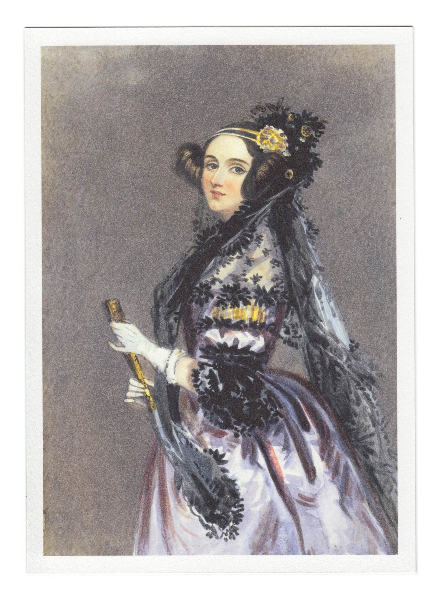
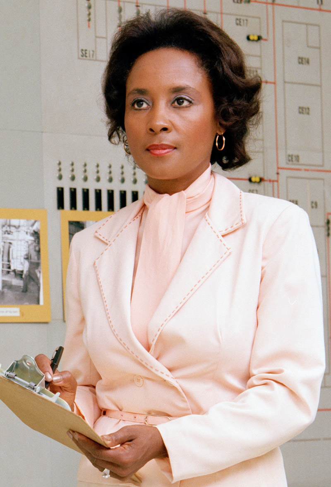

1815 - 1852

"That brain of mine is something more than merely mortal; as time will show."
Ada Lovelace, born in London, is often celebrated as the first computer programmer. Her mother, determined to nurture Ada’s analytical mind, insisted she study mathematics and science. In her groundbreaking notes on Charles Babbage’s proposed Analytical Engine, she envisioned how the machine could compute not just numbers but complex problems. This foresight laid the groundwork for modern computing. Her legacy is celebrated annually on Ada Lovelace Day, which highlights the contributions of women in STEM fields.
1937 - Now

“I'll bet you don't have a computer in your living room.”
Mary Wilkes was born in Chicago and graduated from Wellesley College in 1959 with a degree in philosophy. She was told in the eighth grade by her geography teacher that she would be a computer programmer when she grew up. Mary helped develop the LINC (Laboratory Instrument Computer), regarded as the first personal computer. She even had one in her home—a groundbreaking concept at the time. As a programmer and technical writer, Mary paved the way for the development of user-friendly computing, making technology more accessible to the average person.
1933 - 2011

"Don’t give up on it. Just stick with it. Don’t listen to people who always tell you it’s hard, and walk away from it."
Annie Easley attended Xavier University where she majored in pharmacy for around 2 years. She then began her career at NACA (later NASA) as one of only four African American employees at the time. She worked on code that contributed to energy-efficient batteries and space technology. Easley actively encouraged more women and African Americans to enter STEM fields, inspiring countless individuals to pursue tech careers.
1918-2020

"Girls are capable of doing everything men are capable of doing. Sometimes they have more imagination than men."
Known as one of the most influential Black women in tech, Katherine Johnson’s mathematical brilliance ensured the success of pivotal NASA missions, including John Glenn’s orbital flight. Her ability to perform complex calculations manually earned her a reputation as a “human computer.” Johnson’s story, highlighted in the film Hidden Figures, showcases her crucial role in advancing the U.S. space program during a time of racial and gender inequality.
1914-2000
"Hope and curiosity about the future seemed better than guarantees. That's the way I was. The unknown was always so attractive to me... and still is."
Hedy was an Austrain-American self-taught inventor and film actress, who was awarded a patent in 1942 for her "secret communication system", designed with the help of the composer George Antheil. This frequency hopping system was intended as a way to set radio-guided torpedos off course during the war, but the idea eventually inspired Wi-Fi, GPS and Bluetooth technology commonly used today. Unfortunately, as a natural beauty seen widely on the big screen in films like Samson and Delilah and White Cargo, society has long ignored her inventive genius.
1931 - Now
"I never had in my mind that I couldn't do something."
Elizabeth Feinler’s team at the Stanford Research Institute managed early internet directories. Her work on transitioning to the Domain Name System (DNS) introduced the familiar “.com,” “.org,” and “.gov” protocols. Her contributions are foundational to the internet as we know it today.